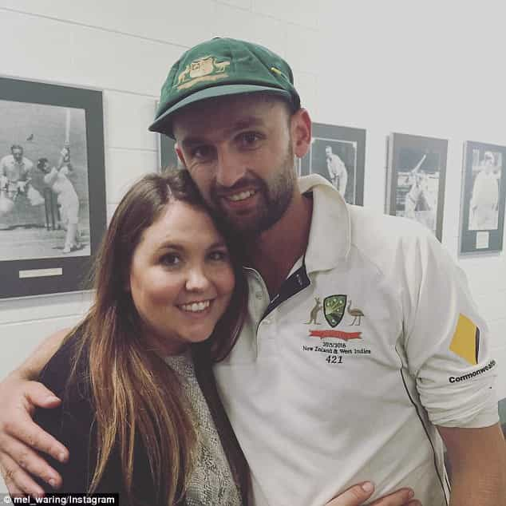
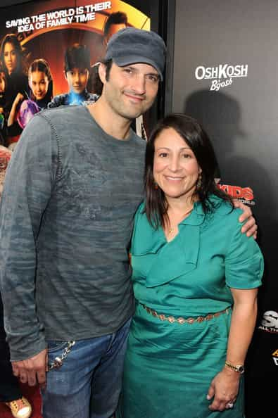
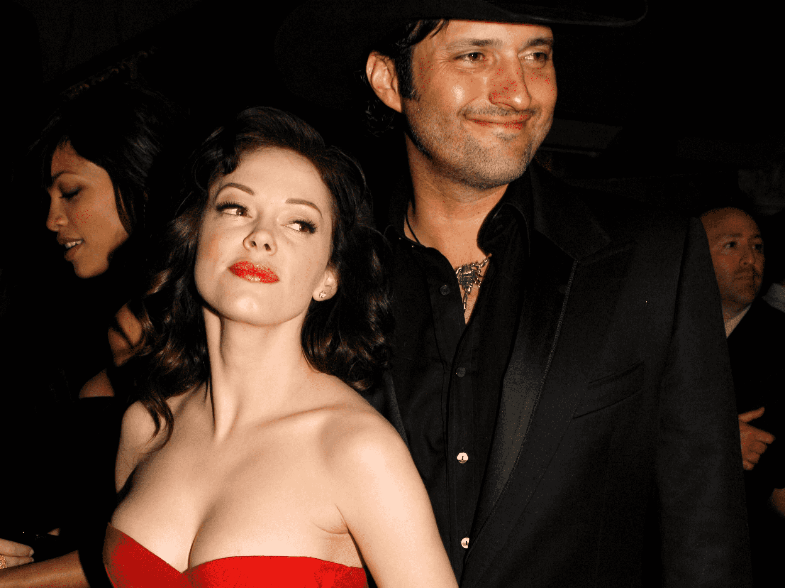
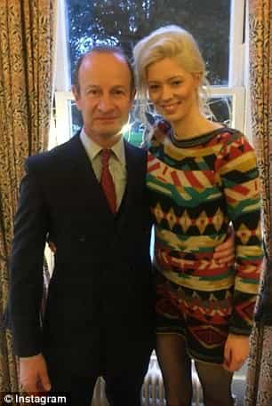

The sexual marketplace need not suck all the time. Plenty of men have laid out the path for you, often initially shacking up with the women they felt they deserved and then moving onto greener, hotter pastures. If you’re in doubt, take a look at the following men who saw the light and found themselves a better-looking woman.
1. Nathan Lyon
An Australian cricketer, which means virtually none of you will know him, Lyon had had two children with his ex before moving onto a smokin’ blonde he apparently remains with.
First this:

Now this:
For a man who was once regarded as the dorkiest guy in his team (and most likely still is), he’s done well for himself—finally.
2. Robert Rodriguez
Rodriguez, a filmmaker, is proof that you can start badly and finish up pretty good, even if rebounding. When he was just past 30, he made the mistake of marrying a woman who was already hitting 40.

He thankfully improved his lot with pre-mental Rose McGowan, a little bit before she went batshit crazy and hit the wall (or hit the wall and went batshit crazy, take your pick).

Rodriguez split with McGowan before her fall into madness and he can probably say that he was the last man to bed her in a bangable state. Hooray.
3. Jason Aldean
Aldean is not really a household name, which makes his upgrade all the better; he cannot rely on the megastar status of others. The country singer left his wife, who in many photos looks old enough to be his mother.
His current wife wins out by a full fifty miles:
Aldean is to be commended. Many men get much older before deciding to take the plunge and abandon a post-wall woman.
4. Henry Bolton
The current leader of the United Kingdom Independence Party (UKIP), Bolton realized that Eastern European women, despite being better overall than Anglo-Saxon/West European women, also have an expiry date.
He’s now with a 25-year-old model named Jo Marney:

We’ll see how this relationship pans out, but we can be sure that Bolton enjoys his sex life a lot more recently.
5. John Copsey
A conservative mayor in the UK, Copsey ended his marriage for a 19-year-old farm girl. Hilariously, his sexagenarian wife called him “nuts” for opting for a nubile girl over a post-wall geriatric.
Whilst his new flame isn’t a perfect 10, I’d still rather give her the keys to my city:
The solution to marital misery for a man is only one late teenage or 20-something woman away.
Have you got the courage to find someone better?
If your relationship with a woman honestly works, all power to you. For many men, however, things are not so rosy. In a number of cases, these guys will be much better off by cutting their losses and finding someone they not only think but know is better. Are you one of those men who might need to make a change? Think it over.
Read More: Women Only Hate Female Objectification When They Can No Longer Profit From It